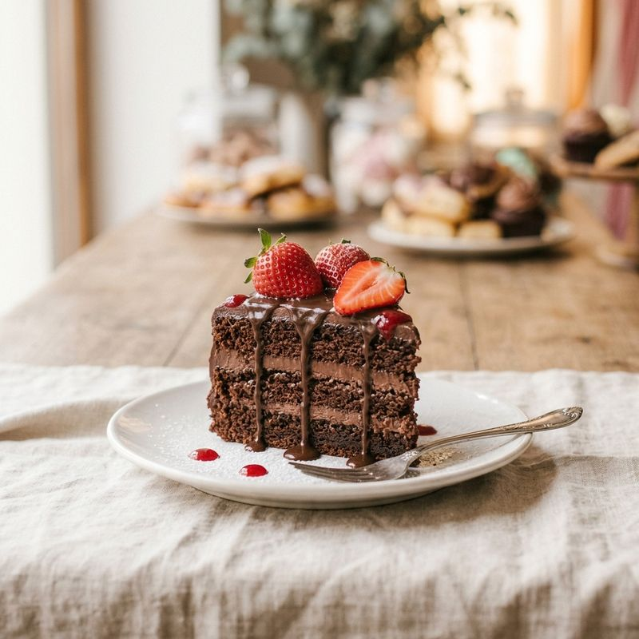
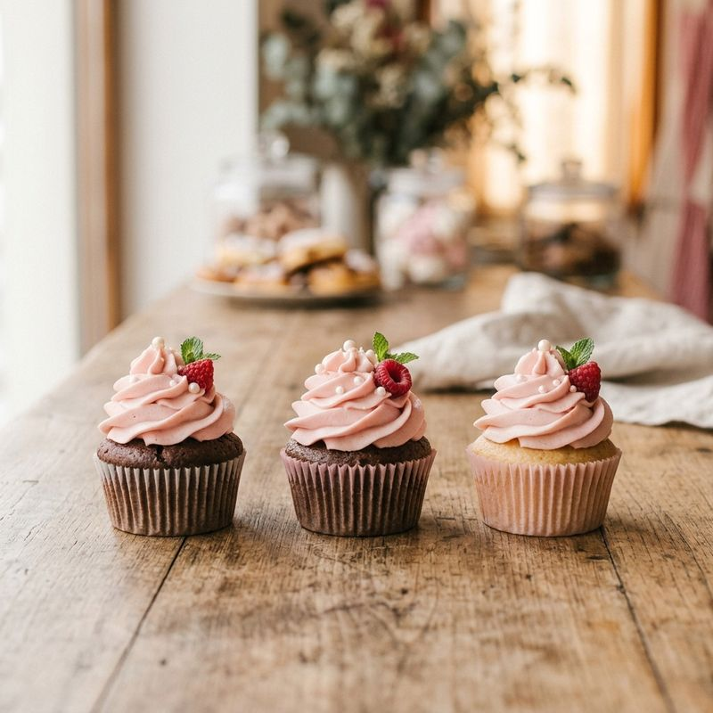
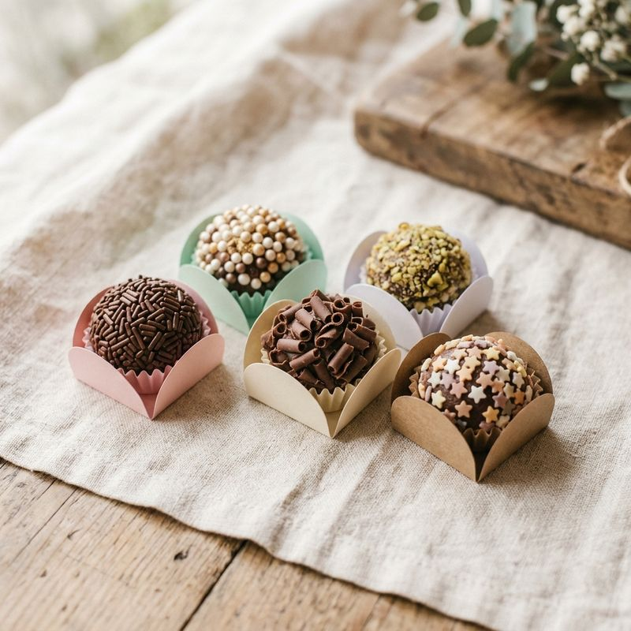

Bolo de chocolate com morangos
Camadas macias de chocolate, recheio cremoso e morangos frescos.
Confeitaria Doce Encanto
A Doce Encanto nasceu na cozinha de casa, com receitas da familia e uma paixão: transformar momentos simples em momentos inesquecíveis.
Hoje, cada doce é decorado à mão, um a um, para que o cuidado artesanal apareça no primeiro olhar.

Camadas macias de chocolate, recheio cremoso e morangos frescos.

Massa fofinha coberta com chantilly, framboesa, e uma folha de hortelã.

Casquinhas crocantes e recheio delicado, em tons suaves.

Chocolate de verdade, enrolado à mão e finalizado com coberturas especiais.
Acompanhe um pouco do nosso dia a dia na cozinha.